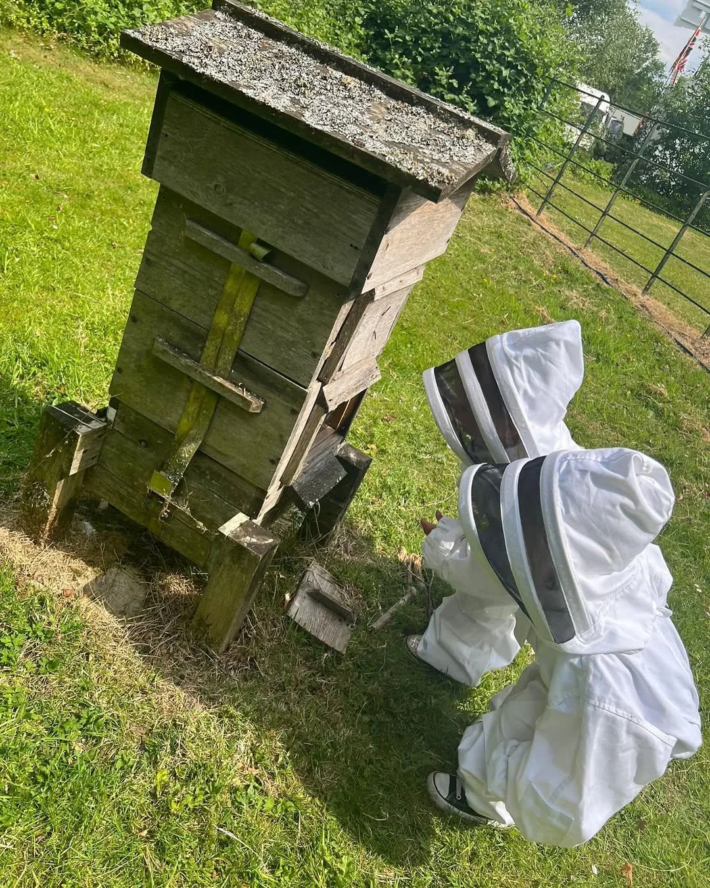

Il metodo · Apiario Priscilla
Decidono i dati,non le abitudini
Pubblichiamo i numeri della nostra arnia: la fiducia si costruisce così, stagione dopo stagione.
La trasparenza
Un impegnoche si puòverificare
Per noi la trasparenza è un modo di lavorare. Condividiamo i dati dell'alveare perché chi compra il nostro miele possa capire come nasce e decidere con consapevolezza.
Ogni variazione di peso, temperatura o umidità racconta qualcosa di vero: una fioritura, un'ondata di caldo, l'inizio dell'inverno. È il ritmo dell'arnia Priscilla, e la traccia misurabile di come la gestiamo.
Tracciabilità fiore-vasetto
Per ogni miele indichiamo quali fioriture lo compongono e da quale zona arriva il nettare.
Benessere della colonia
Lavoriamo sulle api il meno possibile e solo quando serve. I dati del sensore ci dicono quando aprire e quando lasciar stare.
Raccolta etica
Togliamo i melari solo quando il peso dell'arnia è sopra la soglia di scorte che serve alla colonia.
Analisi di purezza
Ogni lotto passa un'analisi melissopalinologica: l'origine floreale è un dato di laboratorio, non un'impressione.
Arnia Priscilla · sensore 3Bee
Un annodentro l'alveare
Da agosto 2024 ad agosto 2025, misurati dal sensore installato nell'arnia. Ogni picco e ogni calo corrispondono a qualcosa che è successo davvero.
- Peso massimo dell'arnia
- 65,7 kg
- Peso minimo, a fine inverno
- 27,4 kg
- Temperatura del nido
- 10–34 °C
- Umidità del nido
- 62–88%
Peso totale dell'arnia
Quando il peso sale in fretta c'è una fioritura in corso. Il crollo di fine agosto 2024 è la smielatura; la risalita del 2025 è la nuova stagione.
Temperatura del nido
D'estate le api tengono il nido vicino ai 35 °C per la covata. D'inverno il glomere si stabilizza molto più in basso.
Umidità del nido
Le api ventilano per tenere l'umidità fra il 60 e l'80%, il campo in cui il nettare matura in miele.
Medie giornaliere fino a dicembre 2024, poi un valore al mese. Fonte: sensore 3Bee Hive-Tech installato nell'arnia Priscilla.
Il processo
Dal nettareal vasetto
-
Bottinatura
Le api raccolgono il nettare delle fioriture dell'Oasi di Conza, sulla, acacia e millefiori, in un raggio di circa 3 km dall'arnia.
-
Maturazione
Per settimane le api ventilano il nettare, ne abbassano l'umidità e lo arricchiscono di enzimi. Quando chiudono le celle con la cera, il miele è maturo.
-
Smielatura a freddo
Estraiamo solo i favi opercolati, a temperatura ambiente. Filtriamo appena, non scaldiamo mai: il miele non viene pastorizzato.
-
Analisi e invasettamento
Ogni lotto va in laboratorio per l'analisi dei pollini, che conferma l'origine floreale. Poi lo invasettiamo e lo sigilliamo come piccolo lotto.
Il calendario dell'apiario
Interveniamosolo quando serve
Primavera
Crescita
Il peso sale in fretta: sono iniziate le grandi fioriture. Interveniamo per prevenire la sciamatura e dare spazio alla regina. La sulla apre la stagione.
Estate
Raccolta
Il nido resta intorno ai 35 °C, la temperatura giusta per la covata. Acacia e millefiori sono al picco; togliamo i melari solo sopra la soglia di scorte.
Autunno
Preparazione
I voli diminuiscono. Con i dati valutiamo le scorte per l'inverno e, solo se serve, le integriamo poco. L'espulsione dei fuchi chiude la stagione.
Inverno
Riposo
Le api si stringono nel glomere e i grafici si appiattiscono. Non apriamo le arnie: se qualcosa non va, ce lo segnala il sensore.
La formazione dietro al miele
Perché un dottoratosi sentenel vasetto
Francesco è arrivato alle api dalla ricerca universitaria, studiando la biodiversità degli ecosistemi agricoli e la sostenibilità della produzione alimentare.
Laurea in Enologia e Viticoltura, magistrale in Scienze e Tecnologie Agrarie, dottorato in Food Science. Quella formazione è il motivo per cui ogni scelta in apiario ha una ragione misurabile.
Non pastorizzato
Il calore degrada enzimi, fenoli e aromi che definiscono un monoflora. La letteratura su questo è concorde.
Apicoltura stanziale
Il trasporto stressa la colonia e cambia il nettare raccolto. Le nostre arnie restano su un solo terroir per tutta la stagione.
Analisi dei pollini
La purezza di un monoflora si misura al microscopio, con la percentuale di polline specie per specie.
Monitoraggio
Peso, temperatura e umidità dell'arnia, misurati dal sensore 3Bee. Le decisioni di raccolta partono da qui.